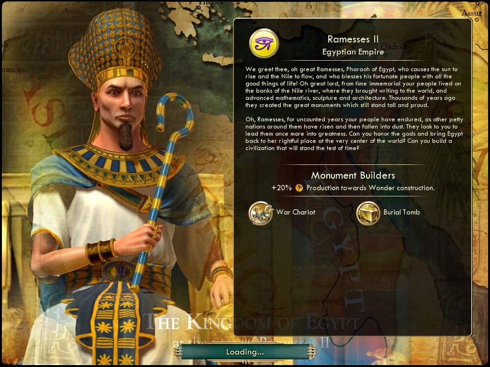

람세스 2세 Ramesses II이집트 Egypt |
|  |
|
해를 띄우고 나일강을 흐르게 하며, 삶의 모든 기쁨으로 백성을 축복하는 위대한 이집트 파라오 람세스여! 까마득한 태고로부터 이집트 백성은 나일강 기슭에 살며 이 세상에 문자와 고등 수학, 조각 기술과 건축 기술을 탄생시켰습니다. 이집트인은 수천년 전에 오늘날까지 위풍당당하게 서 있을 장엄한 기념물을 건설했습니다.
람세스여, 주변의 약소한 나라들이 흥망을 거듭하는 오랜 세월 동안 이집트 백성은 묵묵히 견뎠습니다. 그들은 다시금 옛 영광을 되찾아줄 지도자를 기다리고 있습니다. 신들의 뜻을 받들어 이집트를 세계의 중심으로 되돌리고 세월의 시련을 이겨낼 문명을 건설해 주시겠습니까? |
| 속성 | |
|---|---|
| 특성 |
불가사의 건축가
(Monument Builders) 불가사의 건설할 때 생산이 20% 증가합니다. |
| 고유유닛 |
전투 전차
(War Chariot) 전차 궁수를 대체하는 이집트의 고유 유닛입니다. 이동력이 4에서 5로 증가합니다. 또한 전차 궁수와는 달리 말 자원이 없어도 생산이 가능합니다. |
| 고유건물 |
왕릉
(Burial Tomb) 사원을 대체하는 고유 건물입니다. 유지비가 들지 않고, 신앙을 +2 제공하며 추가로 행복을 +2 제공합니다. 그러나 이 건물이 지어진 도시를 점령할 시 약탈금이 2배로 증가합니다. |